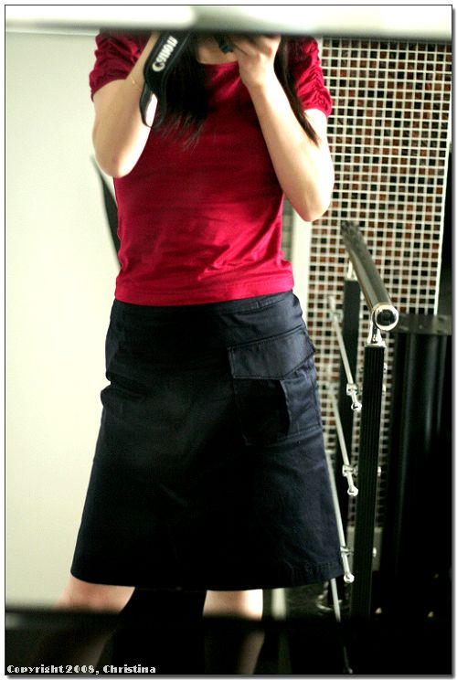
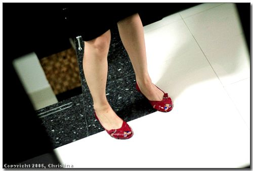

此时彼刻 @ Jun 24, 2008
能经常照顾到手脚的女人一定非常有闲。
能每天按摩手脚，甚至在指甲上涂抹喜爱的指甲油对于我是很奢侈的时刻。
压力和忙碌有时剥夺了你作为女人的一些权利。



能经常照顾到手脚的女人一定非常有闲。
能每天按摩手脚，甚至在指甲上涂抹喜爱的指甲油对于我是很奢侈的时刻。
压力和忙碌有时剥夺了你作为女人的一些权利。


« 变 化 | 人民币升值背后 （转） »
17 Responses to “此时彼刻”
2008-06-24
坐脚丫子的沙发。
保养得不错，看起来没受过太多脚气、老茧、死皮和高跟鞋的折磨。
女人就是好，像我这样脏兮兮的男的肯定没勇气自曝脚丫~
2008-06-24
裙子和T恤的质地不错，协调
指甲的颜色如为暖色系会更好
压力和忙碌剥夺着所有人的权利
2008-06-25
我看那双鞋子好像很眼熟啊？！是不是ecco的啊？！不要告诉我说你也有这双鞋子啊……
2008-06-25
是ecco的,呵呵~好眼力~每个人是不是都存有叛逆的心理？蓝色指甲油不适合上班，可是我却特别想这么做~
2008-06-25
“瘦”就是王道，穿啥都好看！
2008-06-25
你最近还是胖兔子吗？呵呵~
2008-06-25
呵呵，我喜欢紫色和朱红色做脚指甲油。
翻到我06年写的一篇。给你看看
http://www.bulaoge.com/topic.blg?dmn=vivianxu&tid=76636#Content
2008-06-25
裙子是kookai?宝蓝色很好看，连这也不合适office?
2008-06-25
也许国内不适合吧，不知道，要看工作环境和职业，你要搞艺术肯定没问题，在办公室可能不合适，我们这里周围人都很保守的，也很虚伪，呵呵。
2008-06-25
脚丫子都出来了？
不知为什么
不喜欢看到
2008-06-25
haha, 童真的叛逆
办公室的鲶鱼
要是在北京西路大院……
2008-06-26
喜欢这种有点色差的红和黑，很协调，现在能看到FLICKR图片了吗，我郁闷的都很久没有写博了。
2008-06-26
enriquesun有精神洁癖吗?
以前我特不愿意光脚穿凉鞋，看到别人穿人字拖也别扭，主要原因和enriquesun一样看到不穿袜子的脚心里怪怪的感觉。
2008-06-26
ZHI ，看看这几个连接吧：
http://blog.istef.info/2007/06/08/save-flickr/
http://www.williamlong.info/?tags=Flickr
这就是用免费网站不好的地方，受人限制，因为是免费的还无法申诉~
2008-06-26
喜欢衣服这红！NICE 。
2008-06-27
我恐怕一直都会是只肥兔子了。。
2008-07-04
女人廋才是王道，男人廋就不行了。我穿啥都不行。
Leave A Reply
存档只读，评论已关闭。